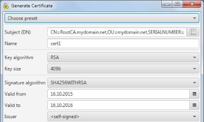
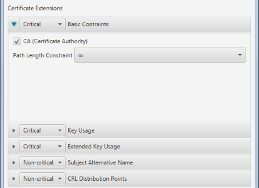
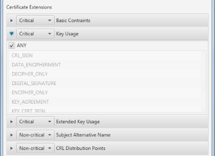
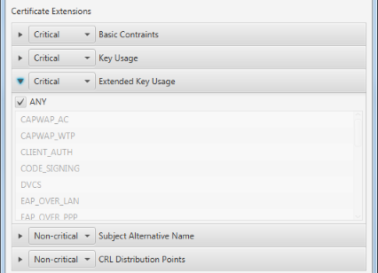
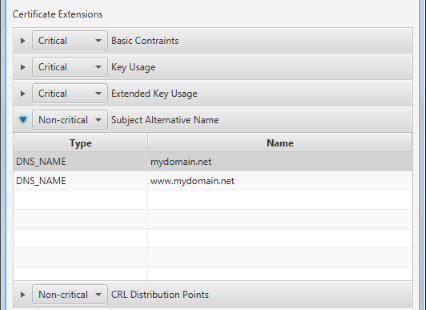
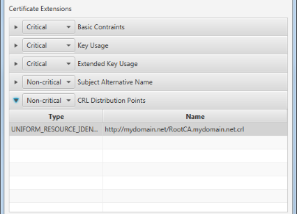

Generate Certificate/Generate Certificate Signing Request
This dialog is used for various actions. Certificate generation and re-signing as well as Certificate Signing Request
generation and re-signing. Depending on the action not all dialog options are available.
General Options
At the top of the dialog the general certificate options are maintained.

By choosing a preset the options can initialized according to a pre-defined template or an existing certificate.
The subject is the unique name of the certificate. It has to be entered as a distinguished name (DN). If unsure about
the correct format, the DN editor can be used. A common pattern to use for the subject
is CN=<Certificate name/purpose>,OU=<your domain>,SERIALNUMBER=<timestamp to distinguish different
versions>.
The alias name is used to store the certificate files and has to be a valid file name and unique within the store.
Key algorithm and key size are defining the options for certificate key generation. Both options are grayed out during
re-signing as the already existing key is used.
The issuer options are defining who signs the newly created certificate and how. For Certificate Signing Request (CSR)
generation these options are grayed out as the CSR is signed by an external authority.
Certificate extensions
Different certificate extensions can be added. The usual ones are Basic Constraints, Key Usage and Extended Key Usage.
Basic Constraints

The Basic Constraints extension indicates whether the certificate to create is Certificate Authority (CA) or not. In
case of a CA it also defines the max issuer path length beginning from this certificate. E.g. setting this value to 0
indicates that the certificate itself can issue other certificates, but the issued certificates are not allowed to.
Key Usage

The Key Usage extension defines the purpose of the certificate to create.
Extended Key Usage

The Extended Key Usage extension defines the purpose of the certificate to create.
Subject Alternative Name

The Subject Alternative Name (SNA) extension can be used to define alias names for the certificate. E.g. for a web server
certificate every of the server's DNS names should be added. As soon as one SNA is defined the certificate's CN value
is no longer considered while comparing the server name with the certificate name. Hence the CN name has to be added
as a SNA as well.
CRL Distribution Points

The CRL Distribution Points extension provides the information about how the certificates Certificate Revocation List (CRL)
is published. The application only supports the definition of simple CRL Distribution Points Names and always assumes
that the certificate's issuer is also the CRL issuer.